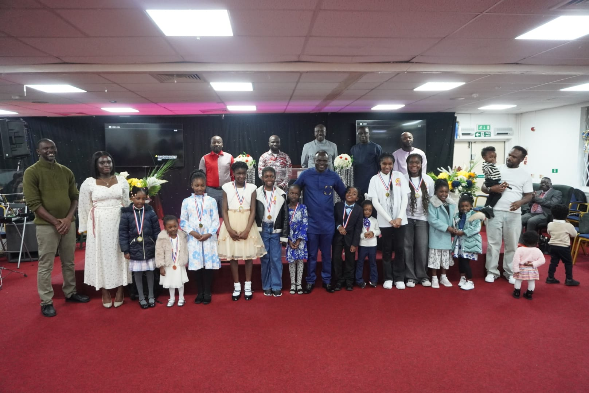
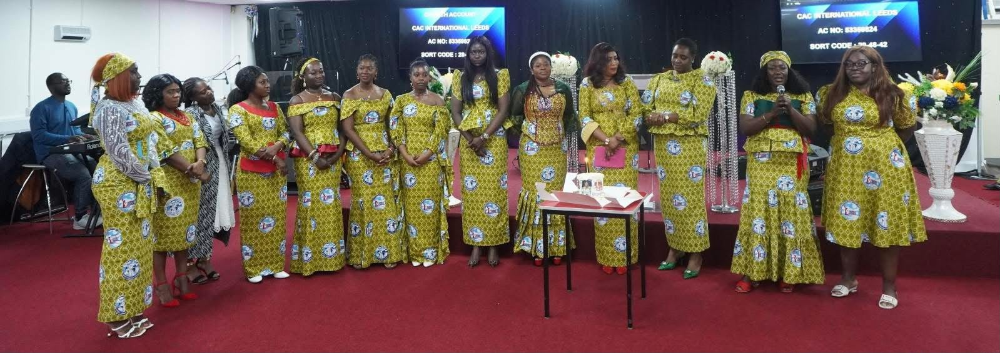

Our Ministries
Discover how you can grow, serve, and connect with others
Get Involved
At Christ Apostolic Church International, we believe that everyone has a unique purpose and role in the body of Christ. Our ministries provide opportunities for you to grow spiritually, build meaningful relationships, and serve others. Whether you are young or young at heart, there is a place for you to belong and contribute.
Youth Ministry
Empowering the next generation to live boldly for Christ. Our youth ministry provides a vibrant community where young people can grow in their faith, develop their gifts, and build lasting friendships.
Visit Website
Children's Ministry
Nurturing young hearts to know and love Jesus. Our children's ministry creates engaging, age-appropriate experiences where kids can learn biblical truths and develop a personal relationship with Christ.
Get Involved
Women's Ministry
Supporting women in their spiritual journey through fellowship, prayer, and biblical teaching. We create spaces for women to connect, grow, and support one another in their walk with Christ.
Get InvolvedMen's Ministry
Equipping men to be godly leaders in their homes, workplaces, and communities. Our men's ministry provides opportunities for fellowship, accountability, and spiritual growth.
Get InvolvedWorship Ministry
Leading the congregation into God's presence through music. Our choir and worship team use their musical gifts to create an atmosphere of praise, worship, and spiritual encounter.
Get InvolvedReady to Get Involved?
We would love to help you find the perfect ministry where you can grow and serve. Contact us to learn more about joining any of our ministries.
Contact UsMinistry Meeting Schedule
Find out when our ministries gather throughout the week
Youth Ministry
Every Tuesdays and Fridays
6:30 PM - 7:30 PM
Children's Ministry
Every Mondays and Fridays
6:30 PM - 7:30 PM
Adult's Zoom
Every Wednesday
7:00 PM